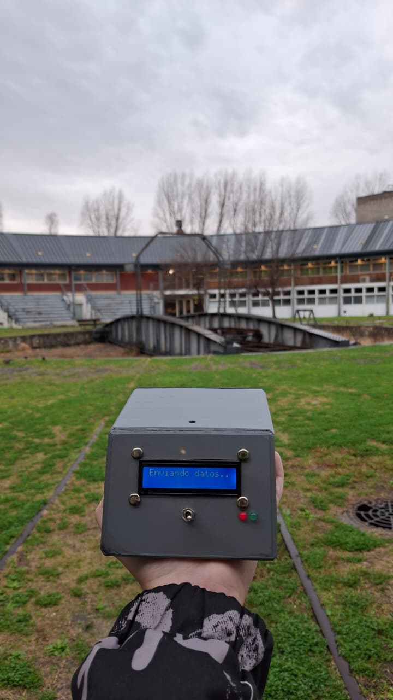
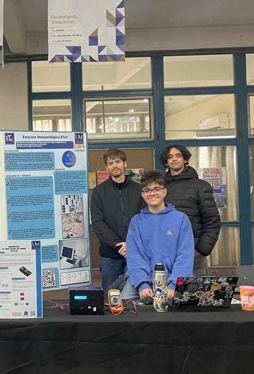

InicioHome / ProyectosProjects / REM
Red de Estaciones MeteorológicasWeather Station Network
Estaciones que miden temperatura, humedad, presión, calidad de aire y luz, y mandan todo a la nube para verlo en vivo desde la web o el celular.
Stations that measure temperature, humidity, pressure, air quality and light, and send everything to the cloud to view live on the web or a phone.
1.er puesto · SASE 2025 · Categoría A1st place · SASE 2025 · Category A2.º premio · SASE 20242nd prize · SASE 2024
Ver el sitio del proyectoVisit the project site ↗Informe SASE 2025SASE 2025 report ↗

- TipoTypeProyecto escolar · ETec (UM)School project · ETec (UM)
- Mi rolMy roleCoordinador del equipo. Placas, firmware, app e infraestructura.Team coordinator. Boards, firmware, app and infrastructure.
- EquipoTeamDelfina García Zangrandi · Juan Ignacio Calderón · Martín GimenezTaller de Robótica e IoT · ETec UMRobotics & IoT Workshop · ETec UM
- StackKiCad · ESP32 / ESP32-C3 · C++ · PlatformIO · MQTT · Node-RED · InfluxDB · Grafana · Next.js · React Native · BLE · Docker
Cómo viajan los datosHow the data flows
Cada estación publica sus mediciones por MQTT. Node-RED las recibe, las guarda en InfluxDB para tener el histórico y las reenvía por WebSocket al dashboard, que se actualiza en tiempo real. La app Android se conecta al mismo broker para ver toda la red desde cualquier lado.
Each station publishes its readings over MQTT. Node-RED receives them, stores them in InfluxDB for history and forwards them over WebSocket to the dashboard, which updates in real time. The Android app connects to the same broker to see the whole network from anywhere.
Qué hiceWhat I did
HardwareHardware
Dos placas diseñadas en KiCad: la estación fija y la micro estación. También los modelos 3D del gabinete y la protección para los sensores, para imprimir.
Two boards designed in KiCad: the fixed station and the micro station. Also the 3D models for the enclosure and sensor shield, ready to print.
Firmware
Un solo código que compila para dos placas (ESP32 DevKit y ESP32-C3 SuperMini), con todo lo que depende del hardware separado en un único archivo.
A single codebase that builds for two boards (ESP32 DevKit and ESP32-C3 SuperMini), with everything hardware-specific kept in one file.
- Sensores BME680, BME280, DHT22 y BH1750, que se activan o desactivan desde la app sin recompilar.
- Publicación por MQTT sobre TLS y pantalla OLED o LCD opcional.
- Configuración por Bluetooth o por portal cautivo desde el navegador.
- Deep sleep entre mediciones para funcionar a batería o con panel solar.
- Actualización por aire (OTA) sin bajar la estación del poste.
- BME680, BME280, DHT22 and BH1750 sensors, enabled or disabled from the app without recompiling.
- MQTT over TLS publishing and an optional OLED or LCD display.
- Setup over Bluetooth or through a captive portal in the browser.
- Deep sleep between readings to run on battery or solar.
- Over-the-air (OTA) updates without taking the station down from its pole.
App AndroidAndroid app
Hecha con React Native y Expo. Usa dos caminos según el caso: Bluetooth para configurar una estación que tenés al lado (por ejemplo, cargarle el WiFi cuando todavía no tiene internet) y MQTT para ver y controlar estaciones que están lejos. También registra los recorridos de las estaciones móviles.
Built with React Native and Expo. It uses two paths depending on the case: Bluetooth to set up a station right next to you (for example, giving it WiFi credentials before it has internet) and MQTT to view and control stations far away. It also logs trips for mobile stations.
Infraestructura y webInfrastructure and web
Node-RED, InfluxDB y Grafana en Docker, y un dashboard en Next.js. Desde el panel se publican las actualizaciones de firmware: cada binario queda asociado a su modelo de placa, se elige qué versión le toca a cada estación y se guarda el historial completo, así volver a una versión anterior es tan simple como elegirla.
Node-RED, InfluxDB and Grafana in Docker, plus a Next.js dashboard. Firmware updates are published from the panel: each binary is tied to its board model, you pick which version each station gets, and the full history is kept, so rolling back is as simple as selecting an older version.
GaleríaGallery
